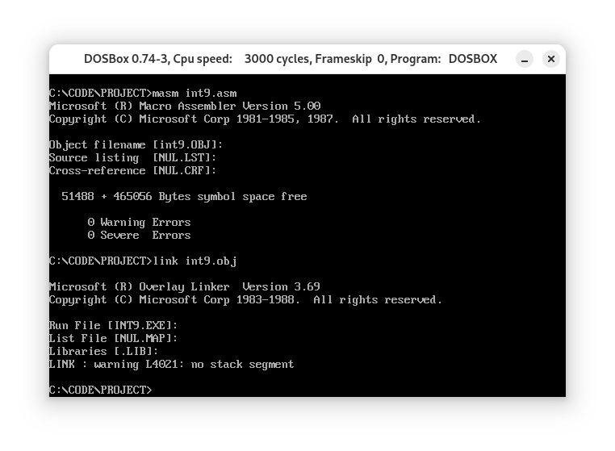

项目情景
安装一个新的int 9中断例程，功能:在DOS下，按下“A”键后，除非不再松开，如果松开，就显示满屏幕的“A”，其他的键照常处理。
分析
题目的要求如下：
- 释放“A”键，显示满屏幕的“A”；
- 正常处理其他的键；
有个很奇怪的点是，对于按下“A”键后“A”需不需要正常处理，原题的说明并不清楚。
在这里，我认为“A”并不属于“其他的键”的范畴，因此不需要正常处理，也不需要让DOS将其输出在屏幕上。
下面的程序中，我们要在内存中写入新的int 9中断例程，为了防止int 9中断例程被操作系统和其他应用程序改写和覆盖，我们可以将其写入中断向量表的空白部分，也即0:200-0:2FF。同时，我们需要在程序中预留开头的2个字来保存原来的int 9例程的地址，以便调用BIOS提供的int 9对输入进行正常处理。
并且，我们需要改写中断向量表中int 9所指向的中断例程位置，将保存int 9例程位置的0:(4*9)和0:(4*9+2)两个字中存储的地址存入0:200和0:202两个字，并将原位置的地址改写为新的int 9中断例程的地址:0:204。
程序实现
int 9中断例程
先来编写本程序的核心，int 9中断例程：
首先判断按下的是否是A键，如果是A键，进行循环判断，直到另一个键被按下(或者A键被松开)触发新的中断例程，跳出循环：1
2
3
4
5int9:
check:
in al,60h
cmp al,1eh ; 按下"A"键
je check ; 不处理
(感觉这里的处理方式非常危险，但除此以外并没有更好的方法)
调用BIOS提供的int 9例程，对其他键进行正常处理:1
2
3pushf
call dword ptr cs:[200h] ; CS=0,0:200为先前的int 9例程位置的保存处
; 调用先前的int 9例程
判断是否是A键被松开，如果不是，跳过下面显示满屏幕的A的程序，直接返回:1
2
3
4
5
6cmp al,9eh ; 释放"A"
jne int9_iret
......
int9_iret:
......
iret
如果是，显示满屏幕的“A”，再返回:1
2
3
4
5
6
7
8
9
10
11
12
13
14
15
16cmp al,9eh ; 释放"A"
jne int9_iret
; 打印"A"
mov cx,2000
mov ax,0b800h
mov es,ax
mov bx,0
s0:
mov byte ptr es:[bx],41h
add bx,2
loop s0
int9_iret:
......
iret
保存在例程中需要被改写的寄存器的值:1
2
3
4
5
6
7
8
9
10
11
12int9:
push ax
push bx
push cx
push es
......
int9_iret:
pop es
pop cx
pop bx
pop ax
iret
定义一个int9_end占位标号，便于在安装时计算int 9例程的长度:1
2int9_end:
nop
安装程序
指定段寄存器:1
assume cs:code,ss:stack
定义栈段stack，用于保存寄存器的值:1
2
3stack segment
db 128 dup (0)
stack ends
定义代码段code，用于存放安装程序和int 9例程:1
2
3
4code segment
......
code ends
end start
初始化栈:1
2
3mov ax,stack
mov ss,ax
mov sp,128
利用串传输指令movsb安装int 9例程，ds:si指向起始位置，es:di指向终点，cx存放长度，cld指定方向为正:1
2
3
4
5
6
7
8
9
10mov ax,cs
mov ds,ax
mov ax,0
mov es,ax
mov si,offset int9
mov di,204h
mov cx,offset int9_end - offset int9 ; Length of int9
cld
rep movsb
将原先的int 9中断例程位置保存在0:200和0:202:1
2
3
4mov ax,es:[9*4]
mov es:[200h],ax
mov ax,es:[9*4+2]
mov es:[202h],ax
将新int 9的地址写入中断向量表，同时用cli和sti防止在改写中断向量表时触发中断:1
2
3
4cli
mov word ptr es:[9*4],204h
mov word ptr es:[9*4+2],0
sti
完成安装，最后返回:1
2mov ax,4c00h
int 21h
完整的程序如下:1
2
3
4
5
6
7
8
9
10
11
12
13
14
15
16
17
18
19
20
21
22
23
24
25
26
27
28
29
30
31
32
33
34
35
36
37
38
39
40
41
42
43
44
45
46
47
48
49
50
51
52
53
54
55
56
57
58
59
60
61
62
63
64
65
66
67
68
69
70
71
72
73
74
75
76
77
78
79assume cs:code,ss:stack
stack segment
db 128 dup (0)
stack ends
code segment
start:
; Stack init
mov ax,stack
mov ss,ax
mov sp,128
; Install new int9
mov ax,cs
mov ds,ax
mov ax,0
mov es,ax
mov si,offset int9
mov di,204h
mov cx,offset int9_end - offset int9 ; Length of int9
cld
rep movsb
; Save the address of former int9
mov ax,es:[9*4]
mov es:[200h],ax
mov ax,es:[9*4+2]
mov es:[202h],ax
; Write IVT
cli
mov word ptr es:[9*4],204h
mov word ptr es:[9*4+2],0
sti
; Terminate
mov ax,4c00h
int 21h
; New int9
int9:
push ax
push bx
push cx
push es
check:
in al,60h
cmp al,1eh ; Press "A"
je check ; Not to treat
pushf
call dword ptr cs:[200h]
; Call former int_9
cmp al,9eh ; Release "A"
jne int9_iret
; Print "A"
mov cx,2000
mov ax,0b800h
mov es,ax
mov bx,0
s0:
mov byte ptr es:[bx],41h
add bx,2
loop s0
int9_iret:
pop es
pop cx
pop bx
pop ax
iret
int9_end:
nop
code ends
end start
有点抽象，但考虑到题目的要求本来就不太清晰……
运行结果
编译、链接，生成int9.exe:

运行结果如视频所示:
可以看到，实现了我们预想的功能。
项目完成